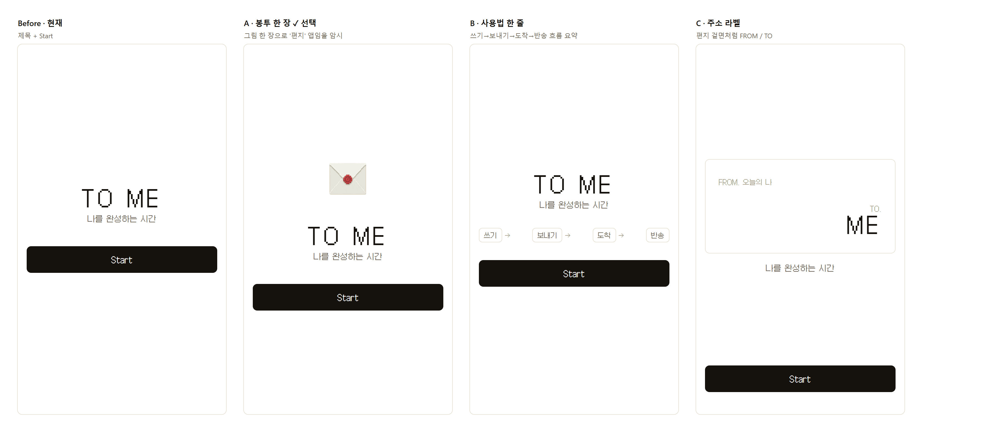
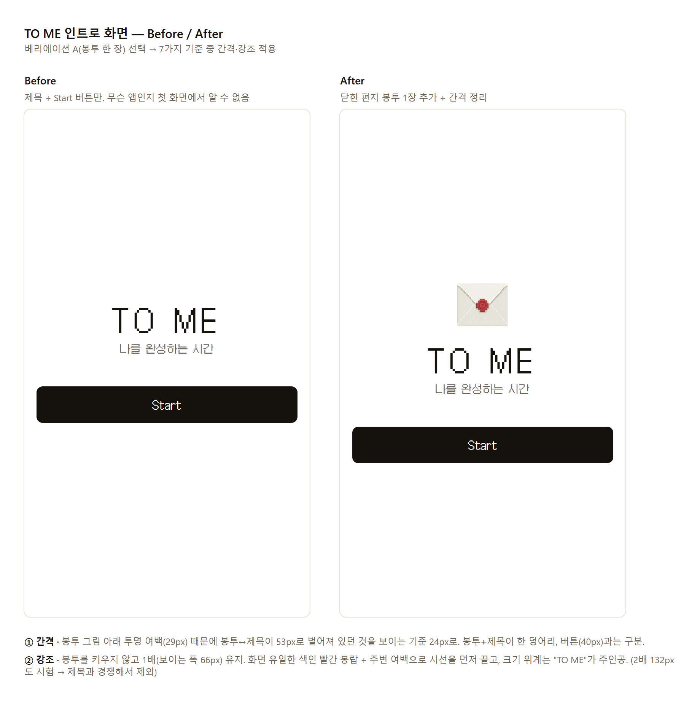
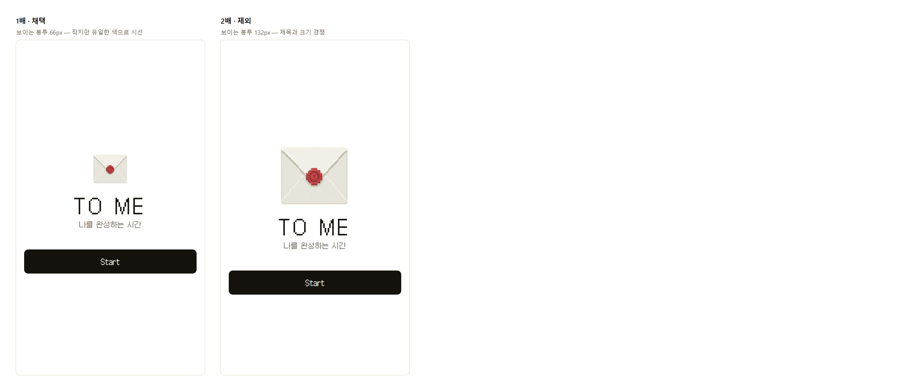

오늘 할 일을 "나에게 보내는 편지"로 쓰는 일정 앱입니다.
할 일을 미루면 편지가 반송함에 쌓이고, 나중에라도 해내면 "재배송 성공"이 됩니다. 계획은 세우지만 막상 그 시간이 되면 자꾸 미루는 사람을 위한 앱입니다.
앱을 열면 가장 먼저 보이는 화면입니다. 앱 이름 "TO ME", 한 줄 소개 "나를 완성하는 시간", 그리고 Start 버튼만 있습니다.
처음 보는 사람이 이 화면만 보고는 "편지 앱"이라는 걸 알 수 없었습니다. 서비스의 첫인상이 가장 중요한 화면인데, 핵심 아이디어(편지)가 하나도 드러나지 않았습니다.
시안은 모두 실제 앱 코드로 만들어서, 그림으로 그린 시안이 아니라 실제로 동작하는 화면 그대로 비교했습니다. 강사님 피드백("픽셀 그래픽 방향은 유지", "'나를 완성' 문구는 브랜드 메시지로만")을 전제로 깔고 작업했습니다.

| 시안 | 무엇을 바꿨나 | 좋은 점 | 아쉬운 점 |
|---|---|---|---|
| A · 봉투 한 장 ✓ | 제목 위에 닫힌 편지 봉투 그림 하나 | 그림 한 장으로 "편지 앱"이라는 게 바로 보임 | 사용법까지는 안 알려줌 |
| B · 사용법 한 줄 | 제목 아래 "쓰기 → 보내기 → 도착 → 반송" | 앱 쓰는 흐름을 한눈에 이해 | 글자가 많아져 첫 화면이 복잡해짐 |
| C · 주소 라벨 | 화면을 편지 봉투 겉면처럼 (FROM. 오늘의 나 / TO. ME) | 편지 컨셉이 가장 강하게 드러남 | 앱 이름 "TO ME"가 둘로 쪼개져 로고 느낌이 약해짐 |
가장 단순하면서도 "편지"라는 핵심 아이디어를 첫 화면에서 전달합니다. 사용법 설명은 바로 다음 화면(앱 소개 화면)이 맡고 있어서, 첫 화면은 담백하게 두는 게 맞다고 판단했습니다.


더 많이 바꾼 시안(B, C)도 만들어 비교한 뒤, 일부러 가장 절제된 안을 골랐습니다. 그리고 "더 크게"가 아니라 "빈 공간과 단 하나의 색"으로 봉투를 눈에 띄게 만들었습니다. 그 결과 첫 화면에서 앱 이름과 함께 "편지 앱"이라는 정체성이 바로 전달됩니다.
작업 메모: 원래 Figma로 진행하려 했으나 무료 플랜의 사용 횟수 한도에 걸려, 강의에서 소개된 Storybook(앱 화면을 부품별로 모아 보여주는 도구)으로 같은 과정을 진행했습니다.